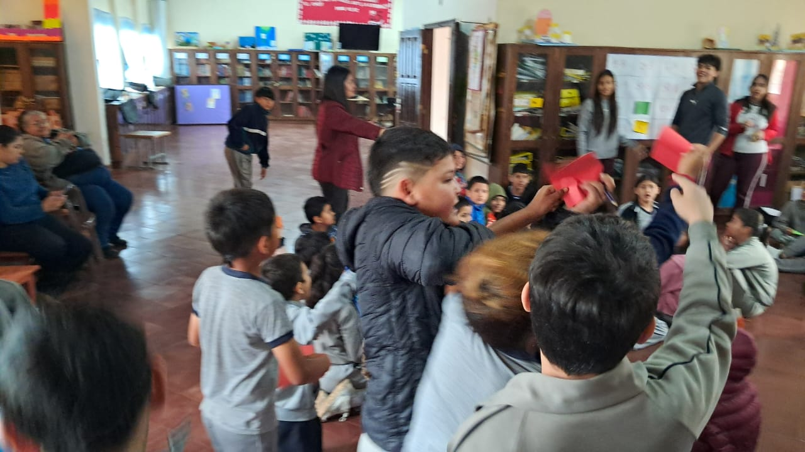

Refuerzo Escolar
Mas que solo aprendizaje
Mas que solo aprendizaje
Durante el acompañamiento escolar trabajamos principalmente el área de Matemáticas con niños del segundo ciclo, específicamente de 4.º, 5.º y 6.º grado. El objetivo fue reforzar conocimientos básicos que son importantes para su aprendizaje, como la suma, resta, multiplicación y división. Antes de realizar las actividades, nosotros, como monitores, recibimos una capacitación para poder acompañar a los niños de una manera adecuada y ayudarlos según sus diferentes niveles de conocimiento. Se buscó que los estudiantes no solamente resolvieran operaciones, sino que también pudieran compartir sus conocimientos entre compañeros. De esta manera, el refuerzo permitió trabajar tanto los contenidos matemáticos como la colaboración y el aprendizaje entre los diferentes grados.

Para realizar el refuerzo utilizamos juegos matemáticos que permitieran aprender de una manera más entretenida..
Cinco grupos de 10 a 15 niños. Cada uno recibió papeles con números del 1 al 100 y los monitores decían operaciones básicas. Ganaba quien completaba más líneas.

Hojas de operaciones y tarjetas con las respuestas. Si dos equipos tenían la misma respuesta, jugaban piedra, papel o tijera. Ganaba el equipo que colocaba más respuestas correctas.

El acompañamiento fue organizado previamente para que los monitores pudiéramos cumplir nuestra función de ayudar y orientar a los niños. Antes de la actividad recibimos una capacitación que nos permitió prepararnos para trabajar con estudiantes de 4.º, 5.º y 6.º grado. Posteriormente, los niños fueron distribuidos en cinco grupos, mezclando los diferentes grados. Esto permitió que los estudiantes pudieran ayudarse entre ellos y aportar conocimientos según lo que habían aprendido. Los monitores estuvimos pendientes de cada grupo, explicando las operaciones cuando era necesario, motivando la participación y ayudando a mantener el orden. También buscamos que todos pudieran participar, evitando que solamente los alumnos que tenían mayor facilidad respondieran las actividades.
En esta sección se colocarán las fotografías tomadas durante la jornada de refuerzo escolar. Las imágenes permitirán mostrar cómo se desarrollaron las diferentes actividades y cómo fue la participación de los niños y los monitores. Se pueden incluir fotografías de los grupos formados, del Bingo Matemático, de los niños resolviendo las operaciones, de las tarjetas de colores y del segundo juego realizado con las hojas de operaciones. También sería importante incluir fotografías de los monitores acompañando a los estudiantes y ayudándolos durante las actividades. Estas imágenes sirven como evidencia de la experiencia realizada y permiten observar el ambiente de participación, compañerismo y alegría que se generó durante el acompañamiento escolar.